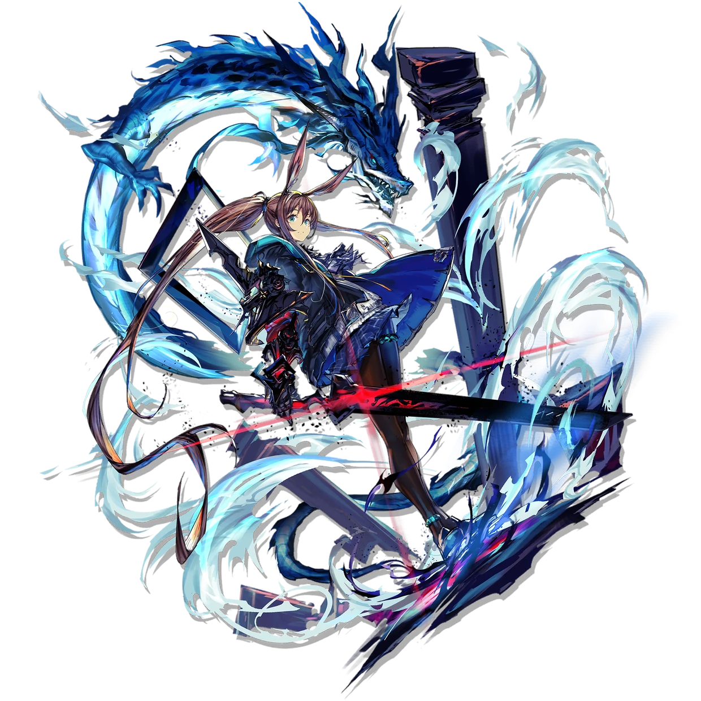

RHODES ISLAND / INTAKE FILE
哪份干员档案里，
有你的影子？
人事部来信：上次有人把每道题都答成了「听博士安排」。这回想听听你自己的主意。填好以后，来领一份和你最像的干员档案。
24 道情境题 · 约 4 分钟 · 28 位干员入职问卷

罗德岛入职档案非官方同人测试
RHODES ISLAND / INTAKE FILE
人事部来信：上次有人把每道题都答成了「听博士安排」。这回想听听你自己的主意。填好以后，来领一份和你最像的干员档案。
24 道情境题 · 约 4 分钟 · 28 位干员